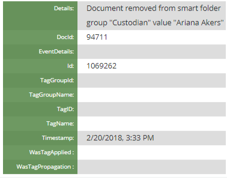

Relationships are based on the content of a specific field. When users select a particular document and want to view relationship details in
The Relationships panels are available at the left side of the Document Viewer that displays when you click a document listed in the Results grid view.
To view the relationship information for the currently displayed document, click the desired relationship tab.
|
|
Tip: Click the pin icon |
There are six default panels that associate relationships with each new case. The following sections will discuss each one in detail.
In the Family, Near Duplicates, and Similar Documents panel, the Score column lists the confidence scores for those document relationships. The higher the score in a relationship, the more the document relates in that way to the one selected in the BEGDOC column of the Results grid.
Intended to show documents that are related to one another, as in an email and its attachment. Family relationships are based on the content of the default BEGATT field and sorted by the BEGDOC field. These column fields display by default.
For a quick overview, click the video below.
The Family panel is created for each Case by default and displays the parent and its children in a list format. The current document being reviewed is highlighted in the list. The grid shows the file type represented by an icon.
|
|
Note: If the file type cannot be determined through its metadata, a broken image icon appears. |
Intended to show documents that are the same or nearly the same in content. Duplicates are grouped by the MD5HASH field and sorted by the BEGDOC field; you can define the details (fields and/or tag groups) to be included in the list.
The Duplicates panel displays two default columns, a check box for selecting or clearing document(s) and the file type icon. The current document under review is highlighted in the list.
For a quick overview, click the video below.
Duplicate versions of the current document display in the list.
|
|
Note: If the file type cannot be determined through its metadata, a broken image icon appears. |
This
For a quick overview, click the video below.
The metadata of the items identified as part of a near-duplicate group will be updated with a group ID to identify the near-duplicate group to which the items belong. For more information, see
Review can assist reviewers in locating the final email (in the email conversation thread), thus allowing them to review only one document in an email conversation.
For a quick overview, click the video below.
Using the Email Thread panel, email threading allows relationships among a family of emails to be identified based on its content. Email families are emails that share a common starting email; an email thread represents a single branch of an email family and determines email order within a family. Email threading can identify email families and inclusive emails for email threads. For more information, see
A combination of email headers and email body content are used to determine when emails belong to the same thread. Generally, the algorithm allows for anomalies that may occur such as timestamp differences generated by different servers. The determination of inclusiveness follows thread identification and is more exacting.
The Document History panel (read only) displays a list of actions, such as redactions and tags, that were taken for a current document. You can search for documents, and sort the Actions and Users to find specific information quickly.

For each Action type, a User and Date/Time is displayed. Examples of Action types include but are not limited to: viewed, highlighted, redacted, tagged, field edits, produced, text embedded, imaged, document edits, mass edits.
Click an action item to display further details as shown in the following figure.

If no changes were made to a document, a message displays stating that no history exists for the selected document.
The Similar Documents panel displays a list of documents that contain elements similar to a selected document.
For a quick overview, click the video below.
Prior to using the Similar Documents feature, the Relationship must be modified within Case Settings to relate by Similar Documents and linked to an Analytics Index.

|
|
Note: If the Similar Documents feature does not appear to be working, check with the Administrator to confirm that the relationship has been linked to an analytic index. |
Available within the Document Viewer is the Document Comparison tool, which allows you to compare the document selected in the Results grid to another document that displays in a Relationships panel.
For a short demo of the tool, click the video below:
To compare the document selected in the search Results grid with any of the other documents that display in a Relationships panel list, select the check box next to that document in the panel and click the  icon. The two documents then display side-by side in the Document Comparison tool of the Document Viewer:
icon. The two documents then display side-by side in the Document Comparison tool of the Document Viewer:
In the document on the left (the original document), anything that displays as missing or added is highlighted in red. In the document on the right (the compared document), anything that displays as new is highlighted in green.
Click  to close the Document Comparison window.
to close the Document Comparison window.
|
|
Note: Mass actions (coding and/or tagging) can be applied to selected items in a relationships panel. See |
Related Topics

 in the top right corner of the relationships tab to keep it open. Click the pin icon
in the top right corner of the relationships tab to keep it open. Click the pin icon  again to collapse the relationships tab.
again to collapse the relationships tab.